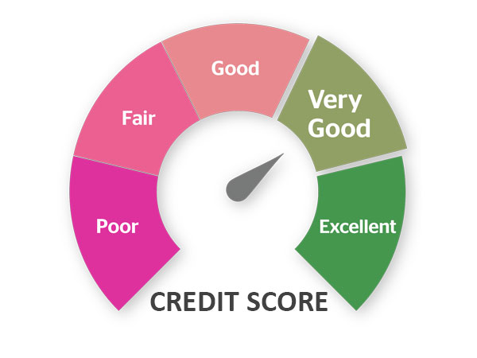

The objective of this project was to build a predictive model that was to help identify customers that were likely to stop using SyriaTel company. We answered the questions; are there any predictable patterns of the customers who are stopping the use of SyriaTel services? What are the features that might be significant in the customers who churn?


The project aims at building a recommendation system that makes relevant and most appropriate movie recommendations to users

The project's objective is to develop an automated credit scoring model using data-driven methodologies to provide objective measures of credit risk. The model aims to enhance the accuracy, consistency, and efficiency of evaluating loan applicants' creditworthiness.

The project was aimed at developing a sytem which recommends appropriate intensity to users when exercising.

Microsoft has decided to venture into the movie industry and create a new movie studio. However, they lack knowledge and understanding of the movie business. The project focuses on analyzing various movie datasets to gain insights into successful films at the box office. The analysis aims to answer key questions and provide recommendations for the type of films Microsoft should create.

This project uses linear regression analysis to understand how certain variables impact housing prices in King County.

Check out my tableau dashboards here.